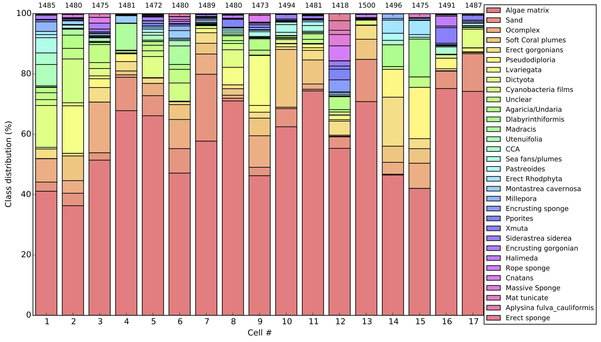

This data-set is an aggregate of two marine ecology data-sets packaged for quantification and domain adaptation experiments. One data-set is a Caribbean coral reef survey by the Catlin Seaview Survey, and one a plankton time-series from Martha's Vineyard Coastal Observatory. The two data-sets, while superfically different, pose the same question, namely: how can we quantify the label-distribution across multiple repeated data-set shifts at the lowest possible manual annotation effort?
The datasets are described in this arXiv preprint, which in turn reference the original publications. To get started, download the development kit. The kit contains a folder scaffolding, meta-data, and tutorials.
If you are interested in using this data-set, please fill out the form below so that we can reach you if there are important updates or edits.
This data-set contains coral reef survey images collected by the Catlin Seaview Survey. The subset considered here were collected in the Caribbean during 2013 and contains roughly 3000 images, each with roughly 100 point annotations.
To get started, checkout the ipython notebook tutorial which is included in the devkit.
The image data is available for download here.
This data-set contains microscopic plankton images captured in-situ by the Imaging Flow CytoBot (IFCB) and packaged as the WHOI-Plankton dataset. Some information about this dataset is available in this arXiv preprint, and make sure to checkout the real-time dashboard, and image gallery.
To get started using this data for quantification and domain adaptation experiments, checkout the ipython notebook tutorial which is included in the devkit.
The image data is available for download here.